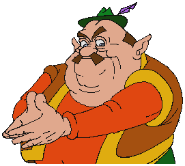

Morshu
Morshu is a minor character in the 1993 video game Link: The Faces of Evil who owns a general store in Goronu area. In the late 2000s, Morshu's cutscenes gained significant popularity in YouTube Poops along with other scenes from the Zelda CD-i games, particularly due to his dialogue line "Sorry, Link, I can't give credit! Come back when you're a little – mmmm – richer." In early 2020, GIFs of the character regained popularity in ironic memes. The meme is closely associated with Thanos Beatbox.
Morshu is the owner of the general store in the Goronu area of Koridai. His shop sits at the base of the valley pass, atop a small bridge next to a rapid waterfall. When Link first meets him, he will tell him that he is selling Lantern Oil, Ropes, and Bombs; he will then ask Link if he would like to buy any of his wares.
